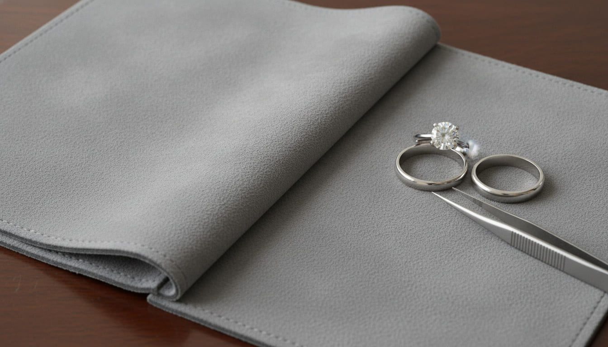
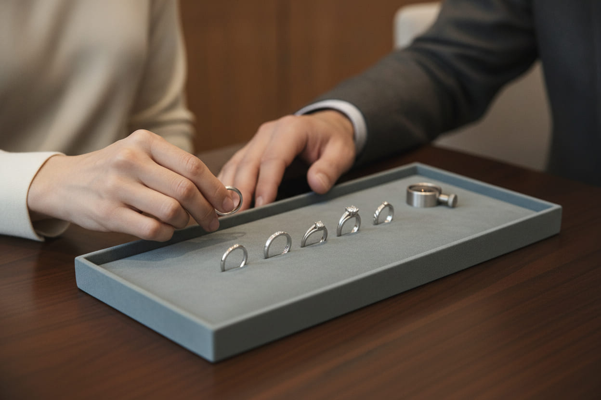
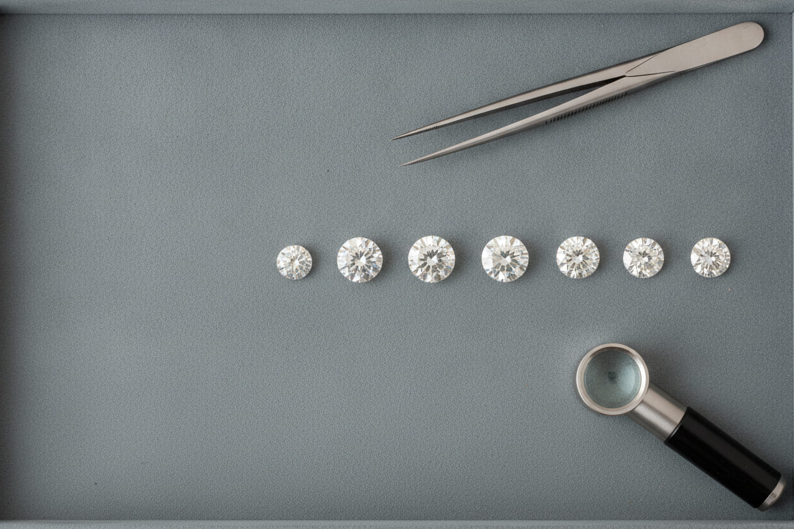
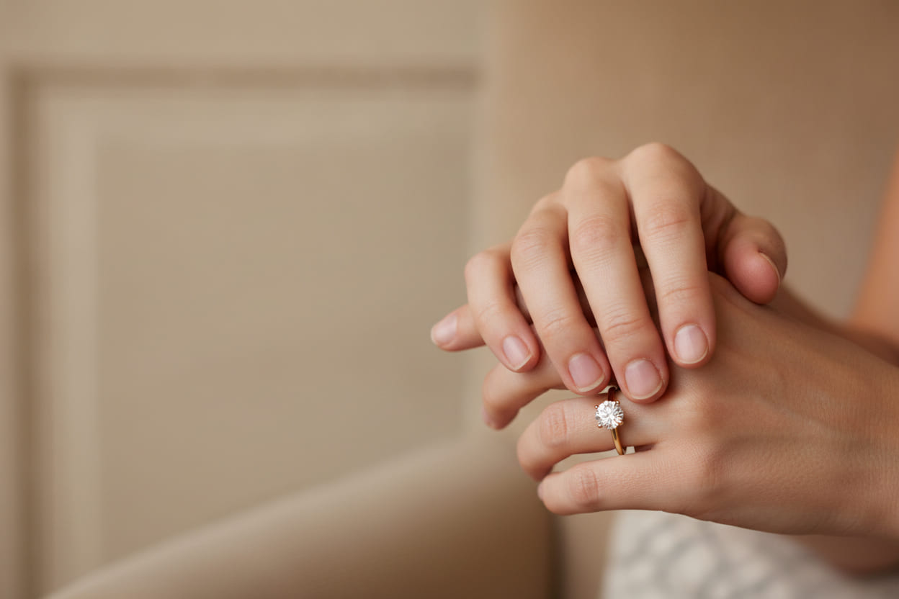
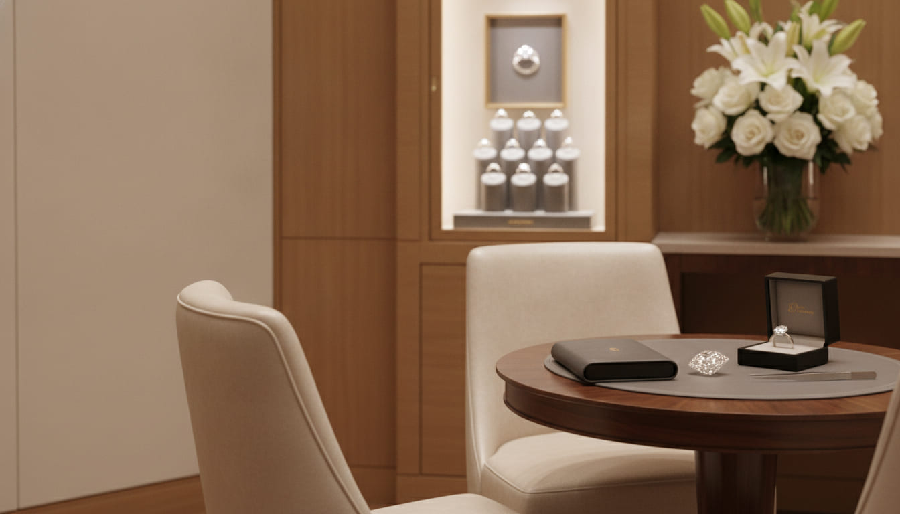

Engagement
We start from the stone and build the ring around it — or take the ring already in your head and make it sit properly on the hand that has to wear it.

The pair, as it leaves the counter
Green Hills · by appointment
A bridal-led jeweller on Bandywood Drive: a small inventory, one bench in the back, and enough room on the calendar that nobody decides in a hurry.
What we make
Most of our year is bridal, so that is what the shop is built around. The rest is the work that keeps those rings on a hand for forty years — the part people find out about later.
We start from the stone and build the ring around it — or take the ring already in your head and make it sit properly on the hand that has to wear it.
The pair matters more than either half. Bands are shaped to sit flush against the ring you chose, so the two do not fight or wear a groove into each other.
Eternity bands, studs, a pendant for a birthday that matters. Kept plain enough to wear on a Tuesday, which is when most of it actually gets worn.
Sizing, retipping worn prongs, restringing pearls, and a look at every setting once a year. Bring in what you own, whoever made it.
The appointment
An appointment is an hour with the case to yourselves. It costs nothing, it commits you to nothing, and you can leave with a photograph of the four you liked and think about it for a month.

A hand, a number you are comfortable with, and whether she wears her jewellery or keeps it in a drawer. That is enough for us to pull the right tray.
Four or five, not forty. A wall of choice is how people leave having decided nothing.
Try them, photograph them, walk out and come back next week. We would rather you were sure than quick.
Three to five weeks for a made ring. You come back once for the fitting, and again the first time it needs cleaning.
Choosing a stone
A well cut stone throws light in a room with the curtains half closed. A poorly cut one needs a spotlight and a good mood. We would rather sell you a smaller stone that behaves.

| Cut | First, always — the only one you see across a table |
|---|---|
| Shape | Round, oval, emerald: the hand decides this one |
| Colour | Warm or cool; a warmer stone looks right in gold |
| Size | Last. Half a point is invisible; a bad cut never is |
We will tell you plainly what we know about a stone, what we do not, and where it came from. If we cannot answer a question about it, it does not go in the tray.
Made to be worn
What we usually change from a catalogue picture is height, edge and weight — the three things nobody thinks about in the shop and everybody notices by March.

| Metal | Platinum, 18k or 14k — chosen for the hand, not the list |
|---|---|
| Setting height | Lowered for gloves, gardening, a nursing shift |
| Engraving | Inside the band, hand cut, about thirty letters |
| Resizing | Two sizes either way, free for the first two years |
The salon
We are on Bandywood, behind the shopfronts on Hillsboro Pike, with parking at the door. If you would rather nobody saw you shopping for this, say so when you book and we keep the room to ourselves.

| Address | 2210 Bandywood Dr, Nashville, TN 37215 |
|---|---|
| Tue – Fri | 10:00 – 18:00 |
| Saturday | 10:00 – 16:00 |
| Mon & Sun | By appointment |
Before you come in
Come and sit down
Call, write, or knock on the door. If we are with someone we pick up anyway and take your name — that is the whole system.